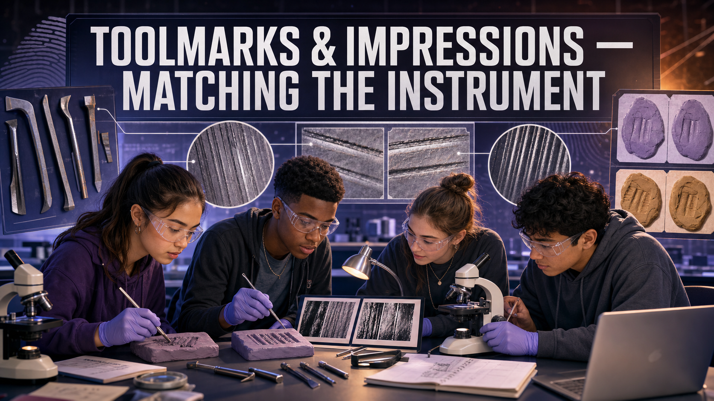

Toolmarks & Impressions — Matching the Instrument¶
Welcome, Investigators!

A crowbar leaves more than a dent — it leaves a signature. Every tool picks up tiny nicks and wear as it's used, and those imperfections scratch a one-of-a-kind pattern into whatever it forces. Today you'll play comparison microscope: press each suspect tool into clay, then match its marks to the pry mark left at the scene. Follow the evidence!
The Case¶
Someone forced the back door of the electronics shop. At the point of entry, the door frame carries a fresh pry mark — a gouge where a tool was wedged in and levered. Three tools were recovered from three suspects:
- Tool A — a flat-blade screwdriver
- Tool B — a wood chisel
- Tool C — a bolt cutter
Your job: make a known impression from each tool, then compare its marks to the crime-scene impression — first by class characteristics (shape, width), then by the fine striations and compression marks that can tie the mark to one specific tool.
Learning Objectives¶
By the end of this investigation you will be able to:
- Distinguish class characteristics from individual characteristics on a toolmark.
- Produce controlled known impressions from suspect tools in a soft medium.
- Compare a questioned toolmark to knowns under magnification using shape, width, and striation patterns.
- Justify an identification or exclusion using both class and individual evidence.
Quick Facts¶
| Lab type | 🧪 Physical bench lab |
| Group size | 2–3 investigators |
| Time | 40–50 minutes |
| Cost | ≈ $15 per group (consumables) |
| Ties to | Ch 13 — Toolmark Analysis, Compression Marks, Sliding Marks, Comparison Microscope, Class vs Individual Characteristics |
Materials¶
Per group (≈ $15):
- Modeling clay or plasticine (a fresh, smooth block)
- 3–4 hardware tools with different edges: a flat-blade screwdriver, a wood chisel, a serrated or notched edge, a bolt cutter
- Hand lens or loupe (10×), or a USB microscope if available
- A rolling pin or flat board to prepare a smooth clay surface
- Labels or tags (A, B, C) and a marker
- A "crime-scene" impression the teacher makes ahead of time with one hidden tool
- Shared: a ruler or caliper with millimeter markings for width measurements
Safety & Fair-Test Rules

- Tools have edges and points — press down into the clay, never toward a hand, and keep fingers clear of the blade path.
- Smooth a fresh clay surface before every impression. A dented or reused surface adds marks that aren't from the tool — that's contamination.
- Press each tool with consistent pressure and angle. Wildly different force changes the mark and ruins a fair comparison.
Background: Class First, Individual Second¶
A toolmark is any impression, scratch, or gouge a tool leaves in a softer surface. Examiners sort the features into two levels. Class characteristics come from the tool's design — a screwdriver blade is a certain width, a bolt cutter has two curved jaws. Class characteristics can narrow the field ("the mark is 6 mm wide, so it wasn't the 10 mm chisel") but they're shared by every tool of that make and size, so they can never point to one single tool.
Individual characteristics are the tie-breaker. As a tool is manufactured and used, it picks up microscopic nicks, burrs, and wear unique to that one object. When the tool scrapes across a surface it drags those imperfections along, cutting a pattern of fine parallel lines called striations (from a sliding mark). When it's pressed straight in, it stamps a compression mark that mirrors its worn edge. Line up the striations from a questioned mark against a known impression and — if they match ridge-for-ridge — you can associate that mark with one specific tool. That side-by-side alignment is exactly what a comparison microscope does in a real lab.
Before you pick up a tool, see how striation matching works.
Explore: Striation-Overlay Comparator¶
Slide a suspect tool's test mark to align its striations with the crime-scene toolmark, then score the correlation to identify or exclude the tool.
Striation-Overlay Comparator Interactive MicroSim
Type: microsim
sim-id: striation-overlay-comparator
Library: p5.js
Status: Implemented
Learning Objective: Compare two toolmark striation patterns by overlaying them and scoring their alignment, mimicking the split-field view of a comparison microscope (Bloom Level 4 — Analyze).
Check each tool's class width first — a tool of the wrong size is excluded on class before you ever look at striations. Then pick a tool, slide it until the striations line up, and press Score Alignment. Only one tool truly matches; a wrong tool never reaches a match no matter how you shift it. This rehearses the key move — sliding one mark against another until the striations line up or clearly don't — before you do it for real under the loupe.
Procedure¶
Part 1 — Make the known impressions.
- Smooth a fresh patch of clay with the rolling pin so it has no stray marks.
- Take Tool A and press its working edge firmly and straight into the clay to make a compression mark; then, on a fresh patch, drag it a short distance to make a sliding (striation) mark. Label both A.
- Repeat for Tool B and Tool C, using consistent pressure. Keep each tool's knowns clearly labeled.
Part 2 — Examine the crime-scene mark.
- Get the teacher's crime-scene impression (made with one hidden tool). Measure its width and note its overall shape — these are class characteristics.
- Under the loupe or USB microscope, look for individual characteristics: fine striation lines, a distinctive nick, or an irregular edge stamped into the compression mark.
Part 3 — Compare and decide.
- Compare the crime-scene mark's class characteristics to each known. Immediately exclude any tool whose width or shape can't match.
- For the surviving candidate(s), align the crime-scene striations against each known — slide them mentally (or in the comparator) until lines either coincide or don't.
- Commit to an identification (or an exclusion) and record the specific features that support it.
Data Collection¶
Fill in one row per tool.
| Tool | Class: width (mm) | Class: shape | Individual features (striations / nicks) | Class match? | Individual match? |
|---|---|---|---|---|---|
| Crime-scene mark | — | — | |||
| A (screwdriver) | |||||
| B (chisel) | |||||
| C (bolt cutter) |
Analysis Questions¶
- Which tool made the crime-scene mark? Cite one class characteristic and one individual characteristic that support your identification.
- Which tool did you exclude first, and was it excluded on class or individual characteristics? Explain why that difference matters.
- Explain in your own words why class characteristics alone can never identify a single tool, but can still be powerful evidence.
- A compression mark and a sliding mark come from the same tool. What does each type reveal that the other doesn't?
- Real toolmark identification has been questioned since the 2009 NAS report for lacking measured error rates. How would you phrase your conclusion honestly to a jury, given that limitation?
Deliverable¶
Turn in a one-page Toolmark Comparison Report naming the tool you identify and the tool(s) you exclude, with a labeled sketch or photo of the crime-scene mark and the matching known side by side. Mark the specific striations or edge features you relied on.
Investigator Tip

Angle and pressure are everything. If your known impression looks nothing like the scene mark, don't panic — try re-pressing the tool at the same angle the burglar likely used. A real examiner makes several test impressions to find the one that reproduces the questioned mark before calling it a match.
Extension Challenge: Fool the Examiner
Trade crime-scene impressions with another group — but each team secretly makes two knowns with the same model of screwdriver. Can the other team still tell the two identical-looking tools apart using only individual characteristics? Write down what finally separated them, or explain why the comparison had to stay "inconclusive."
Teacher Notes¶
Setup, timing, and grading (click to expand)
- Prep: Make each group's crime-scene impression yourself with one known tool, and keep the answer sealed. Deliberately nick one tool's edge with a file so it carries an obvious individual characteristic — that makes the striation match findable with a hand lens.
- Clay matters: Firm plasticine holds fine detail better than soft children's dough. Chill it briefly if it's too soft to take striations.
- Use the Striation-Overlay Comparator above to rehearse the sliding comparison on screen first, then have students do it physically by rocking one clay strip beside another under the loupe.
- Differentiation: For a quicker lab, compare compression marks only. For a challenge, add two same-model tools (see the Extension) so class characteristics can't separate them.
- Assessment focus: Reward students who exclude on class first, then reach for individual characteristics — and who use cautious language given the technique's documented limitations.
Case Closed — For Now

You matched a gouge in a door frame to the one tool that made it — the same class-then-individual logic a real firearms-and-toolmark examiner uses every day. Every nick told a story, and you were patient enough to read it. Follow the evidence!